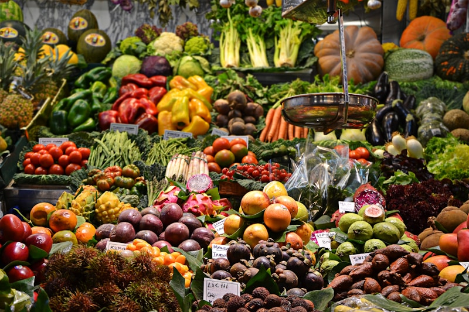
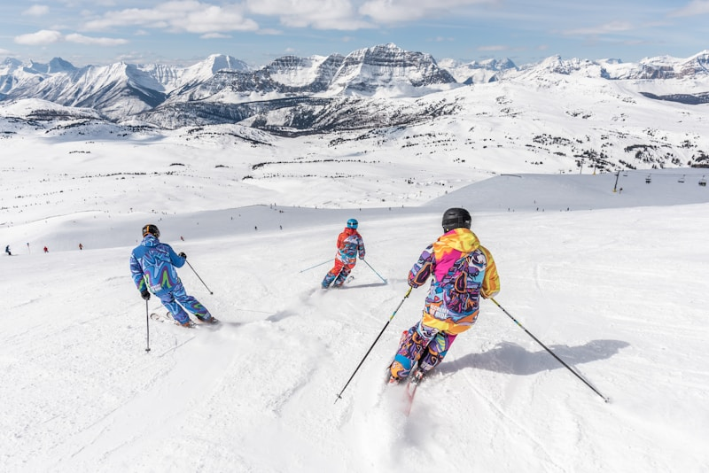
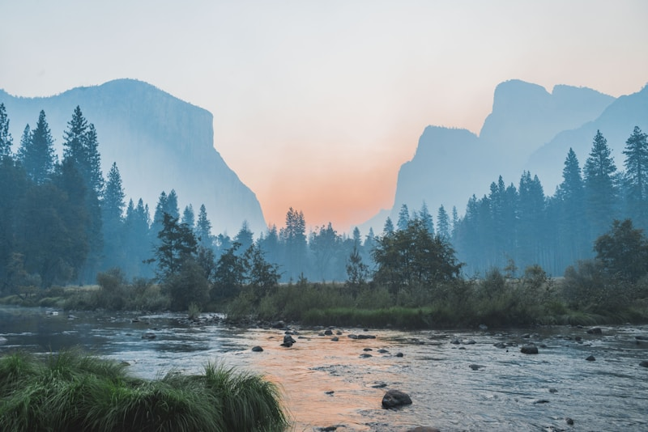

About Interlaken
Nestled between Lake Thun and Lake Brienz in the heart of the Swiss Alps, Interlaken is known as the adventure capital of Switzerland. With its stunning mountain scenery, crystal-clear lakes, and endless outdoor activities, it's the perfect destination for our family with varied interests.
We've created personalized "Top 5" lists for each family member based on their specific interests. Scroll down to find activities tailored just for you!
Jason's Top 5
Hiking trails, scenic viewpoints, and historical sites
1. Harder Kulm Trail & Viewpoint

This moderate 4 km trail starts from Interlaken Ost and leads to a spectacular viewpoint offering panoramic views of Interlaken and the surrounding lakes. The hike takes about 1.5 hours each way through beautiful forest terrain with increasingly stunning views as you ascend.
At the top, you'll find the "Two Lakes Bridge" viewing platform extending out over the edge, providing unobstructed views of Lake Thun, Lake Brienz, and the mountains beyond including Eiger, Mönch, and Jungfrau.
Difficulty: Moderate
Duration: 3 hours round trip (hiking)
Alternative: Funicular railway available if you prefer not to hike
Tip: Go early in the morning for the best light and fewer crowds. The Harder Kulm restaurant at the top offers traditional Swiss cuisine with incredible views.
2. Schynige Platte Ridge Trail

This spectacular 6 km loop trail offers some of the most breathtaking views of the Eiger, Mönch, and Jungfrau peaks. The trailhead is accessible via a vintage cogwheel train from Wilderswil (near Interlaken), which is an experience in itself as it climbs through alpine meadows.
The trail features stunning panoramic views, alpine flowers (especially beautiful in June), and a botanical alpine garden with over 600 plant species. The relatively flat terrain along the ridge makes this hike accessible while still offering world-class mountain scenery.
Difficulty: Easy to moderate
Duration: 2.5 hours (hiking time)
Best Time: Morning, when visibility is typically best
Tip: Bring binoculars to spot wildlife and get close-up views of distant peaks. The historic mountain hotel offers a great lunch spot with traditional Swiss cuisine.
3. Niederhorn Ridge Trail

This flexible trail (4.5 km to 11 km depending on your preference) offers stunning views from the Güggisgrat ridge overlooking Lake Thun. The trail can be customized based on your energy level for the day, with several points where you can shorten or extend the hike.
What makes this trail special is the combination of alpine scenery with lake views, and the excellent chances of spotting local wildlife including ibex and marmots. The ridge walk provides 360-degree panoramic views throughout much of the hike.
Difficulty: Moderate
Duration: 2-4 hours depending on route chosen
Access: Cable car from Beatenberg to Niederhorn summit
Tip: Consider taking the scooter ride down the mountain after your hike for a thrilling descent. Early morning offers the best chance to spot wildlife.
4. Interlaken's Old Town & Monastery

Explore the charming streets of Interlaken's historic center, where you can find well-preserved buildings dating back several centuries. The Interlaken Monastery and Castle, dating back to 1133, offers a fascinating glimpse into the town's medieval past.
The monastery complex includes beautiful gardens, historic architecture, and exhibits on local history. Nearby, you can stroll along the Aare River and enjoy the peaceful atmosphere away from the more touristy areas of town.
Duration: 2-3 hours at a leisurely pace
Highlights: Monastery, castle, historic buildings, Aare River
Location: Central Interlaken, easily walkable
Tip: Visit the Japanese Garden within the monastery grounds for a peaceful retreat, and check if any cultural events are happening during our visit in June 2026.
5. Mt. Niesen - "The Swiss Pyramid"

Known as the "Swiss Pyramid" due to its distinctive shape, Mt. Niesen offers a unique hiking experience with some of the most spectacular views in the region. The summit can be reached by funicular, but the trail connecting the top to the middle station provides a quieter, more peaceful hiking experience.
From the summit at 2,362 meters (7,749 feet), you'll enjoy panoramic views of Lake Thun and over 200 mountain peaks. The distinctive pyramid shape of the mountain creates unique perspectives and photo opportunities.
Difficulty: Moderate to challenging
Duration: 2-3 hours (partial hike)
Access: Funicular from Mülenen (accessible by train from Interlaken)
Tip: Consider having lunch at the summit restaurant with its panoramic terrace. For a unique experience, hike down from the middle station rather than taking the funicular all the way.
Donna's Top 5
Chocolate experiences, wine tastings, specialty local goods, and shopping districts
1. Funky Chocolate Club Workshop

Indulge in a hands-on chocolate-making workshop at the Funky Chocolate Club, where you'll create your own chocolate masterpieces under the guidance of experienced chocolatiers. This interactive experience allows you to work with 400 grams of premium Swiss chocolate, melting and decorating it to your taste.
Learn about the history and production of Swiss chocolate while crafting your own unique creations to take home as delicious souvenirs. The workshop includes all materials and packaging for your chocolate creations.
Duration: 1-2 hours
Cost: CHF 65 per adult
Location: Central Interlaken, easily accessible
Tip: Book in advance as workshops fill up quickly, especially during summer months. Consider pairing your chocolate with local wines for a complete Swiss tasting experience.
2. Höheweg Shopping District

Interlaken's main street, Höheweg, is lined with boutiques, cafés, and Swiss chocolate shops, making it the perfect destination for window shopping and experiencing local culture. The wide, tree-lined boulevard offers stunning views of the Jungfrau mountain as you browse.
You'll find luxury watch boutiques, Swiss chocolate shops, souvenir stores, and fashion retailers. The area also features beautiful gardens and historic hotels that showcase the town's rich tourism heritage dating back to the 19th century.
Highlights: Luxury watches, Swiss chocolates, fashion, souvenirs
Best Time: Morning or late afternoon when it's less crowded
Location: Central Interlaken between the East and West train stations
Tip: Visit the historic Victoria-Jungfrau Grand Hotel for a glimpse of Belle Époque luxury, and stop at one of the outdoor cafés for coffee and people-watching with mountain views.
3. Local Wine Tasting Experience

While the Interlaken region isn't known for vineyards, you can enjoy curated wine tastings featuring selections from across Switzerland's wine regions. Several hotels and restaurants in Interlaken offer wine tasting experiences that pair Swiss wines with local cheeses and charcuterie.
These tastings typically include wines from the nearby Thun region as well as selections from the French-speaking cantons of Valais and Vaud, which produce some of Switzerland's finest wines. Learn about the unique terroir and grape varieties that make Swiss wines special yet little-known outside the country.
Duration: 1-2 hours
Highlights: Swiss wines, cheese pairings, expert guidance
Location: Various hotels and restaurants in Interlaken
Tip: Look for tastings featuring Chasselas (the most important white grape variety in Switzerland) and Pinot Noir from Valais. Ask about wine tours to the nearby Thun region if you'd like to visit a local winery.
4. Specialty Local Goods at Interlaken Market
Discover authentic Swiss specialty products at Interlaken's local markets, where you can find everything from artisanal cheeses and cured meats to handcrafted souvenirs and local honey. The markets offer a more authentic shopping experience than the tourist shops on the main street.
Look for Bernese Oberland specialties like Alp cheese (made in summer on mountain pastures), dried meat specialties, mountain herb products, and handcrafted wooden items that showcase the region's traditional craftsmanship.
Market Days: Typically Tuesday and Saturday mornings
Highlights: Local cheeses, mountain herbs, handcrafts, honey
Location: Various locations in Interlaken depending on the day
Tip: Ask vendors for samples before buying, and bring cash as not all vendors accept cards. For the freshest products, arrive early in the morning when the market opens.
5. Top of Europe Flagship Store
This premium shopping destination offers a wide variety of high-quality Swiss souvenirs, including chocolates, watches, and unique keepsakes. The store features products from renowned Swiss brands and exclusive Jungfrau region merchandise.
Beyond typical souvenirs, you'll find luxury Swiss watches, premium chocolate gift sets, authentic Swiss Army knives, and high-quality textiles. The store's knowledgeable staff can help you find authentic Swiss products and explain their significance.
Highlights: Premium Swiss products, exclusive Jungfrau merchandise
Location: Central Interlaken, near Höheweg
Best For: High-quality souvenirs and gifts
Tip: Look for the special Jungfrau region chocolates that aren't available elsewhere. Tax-free shopping may be available for purchases over a certain amount.
Caleb's Top 5
Adventure activities, local cuisine specialties, and unique dining experiences
1. Paragliding Over Interlaken

Experience the ultimate adrenaline rush with a tandem paragliding flight over Interlaken, offering breathtaking aerial views of Lake Brienz, Lake Thun, and the surrounding Alps. After a brief safety briefing, you'll take off from a mountain launch site with an experienced pilot.
The flight typically lasts 15-20 minutes, during which you'll soar like a bird over one of Switzerland's most beautiful landscapes. Your pilot may perform some gentle acrobatic maneuvers if you're comfortable with it, adding extra excitement to the experience.
Duration: 1.5 hours total (including transportation and briefing)
Physical Requirements: No experience necessary, suitable for most fitness levels
Best Weather: Morning flights typically have the calmest conditions
Tip: Wear layers as it can be cooler at the launch site, and bring a small camera that can be secured (most operators offer photo/video packages as well). Book early in your trip in case of weather cancellations.
2. Canyoning in Chli Schliere

Dive into the exhilarating world of canyoning at Chli Schliere, where you'll slide down natural waterslides, jump into crystal-clear pools, and rappel down waterfalls. This half-day adventure combines swimming, climbing, and hiking through a spectacular alpine canyon.
After a safety briefing and equipment fitting, professional guides will lead you through the canyon, teaching techniques and ensuring safety while you navigate through the gorge. The experience offers a unique perspective of Switzerland's natural beauty from within its water-carved landscapes.
Duration: 4-5 hours (including transportation and briefing)
Physical Requirements: Good swimming ability, reasonable fitness level
Includes: All necessary equipment (wetsuit, helmet, harness)
Tip: Wear swimwear under your clothes and bring a towel and change of clothes. The water is refreshingly cool even in June, but the wetsuits keep you comfortable.
3. Canyon Swing in Grindelwald
For the ultimate thrill-seeker experience, the Canyon Swing in Grindelwald offers a heart-stopping 90-meter free fall into a canyon before swinging through the gorge. Unlike bungee jumping, the canyon swing creates a massive pendulum motion after the initial drop.
You can choose from various jump styles ranging from standard to more adventurous options like backward or upside-down. The entire experience takes place in a stunning alpine setting with professional staff ensuring your safety throughout.
Duration: 2-3 hours including transportation from Interlaken
Physical Requirements: No experience necessary, weight restrictions apply
Includes: Safety equipment, instruction, and transportation
Tip: Consider trying one of the more adventurous jump styles for an even bigger adrenaline rush. Photos and videos are available for purchase to capture your epic moment.
4. Jet Boat Ride on Lake Brienz
Experience high-speed thrills on a jet boat ride across the turquoise waters of Lake Brienz. These powerful boats perform 360-degree spins, high-speed runs, and power stops that send spray flying, all against the backdrop of the surrounding mountains.
Between adrenaline-pumping maneuvers, you'll also get to enjoy the stunning scenery of Lake Brienz, including views of waterfalls cascading down mountain sides and picturesque Swiss villages along the shoreline.
Duration: 1 hour on the water
Departure Point: Interlaken East harbor
Includes: Safety briefing, life jackets, and waterproof ponchos
Tip: Wear clothes that can get wet despite the ponchos provided. Secure any loose items as the ride can get quite wild during the spins and stops.
5. Swiss Alpine Cuisine Experience

Discover authentic Swiss Alpine cuisine through a culinary tour of Interlaken's best traditional restaurants. Sample dishes like raclette (melted cheese scraped onto potatoes), rösti (crispy potato pancake), älplermagronen (Alpine macaroni with cheese, potatoes, and caramelized onions), and authentic Swiss fondue.
For the adventurous eater, try more unique local specialties like Berner Platte (a mixed meat platter including smoked pork and sausages) or seasonal game dishes that showcase the hunting traditions of the region.
Recommended Restaurants: Restaurant Laterne, Chalet-Restaurant Bödeli, Bären Restaurant
Local Specialties: Cheese fondue, raclette, rösti, Berner Platte
Beverage Pairings: Local Swiss wines, craft beers from Rugenbräu Brewery
Tip: For the most authentic experience, look for restaurants displaying the "Swiss Culinary Heritage" label. Many traditional dishes are meant for sharing, so they're perfect for a family meal.
Ryan's Top 5
Indoor activities, e-scooter tours, tech-related attractions, and scenic vistas without extensive hiking
1. E-Scooter Culture Tour

Explore Interlaken's cultural highlights on this guided three-hour e-scooter tour that requires minimal physical exertion. The tour takes you to various castles around Interlaken and includes a ride on the funicular railway to Heimwehfluh, where you can enjoy a light snack before descending via a toboggan run.
The e-scooters are easy to operate and provide a fun way to cover more ground than walking while still enjoying the fresh air and scenery. Your guide will share interesting facts about Interlaken's history and culture throughout the tour.
Duration: 3 hours
Difficulty: Easy, no special skills required
Includes: E-scooter rental, helmet, guide, funicular ticket
Tip: Wear comfortable clothes and bring sunscreen. The e-scooters have a basket for small personal items. This tour is perfect for those who want to see the sights without extensive walking.
2. Jungfrau Virtual Reality Experience

Experience the thrill of the Swiss Alps without the physical exertion at the Jungfrau VR Adventure in central Interlaken. This cutting-edge virtual reality experience lets you "climb" the famous peaks, "paraglide" over the lakes, and "ski" down pristine slopes—all from the comfort of a high-tech VR chair.
The experience uses state-of-the-art VR technology with motion platforms that simulate the feeling of movement, combined with wind effects and temperature changes to create an incredibly immersive experience of the region's most spectacular adventures.
Duration: 45 minutes
Location: Central Interlaken, near Höheweg
Best For: Tech enthusiasts and those who want alpine thrills without physical challenges
Tip: Book the first session of the day to avoid waiting times. If you're prone to motion sickness, let the staff know and they can adjust the intensity of the experience.
3. Harder Kulm Funicular & Panorama Restaurant

Enjoy spectacular mountain views without the hike by taking the Harder Kulm funicular railway to Interlaken's local mountain. The modern cable car whisks you up to 1,322 meters in just 10 minutes, where you'll find the "Two Lakes Bridge" viewing platform with panoramic views of Lake Thun, Lake Brienz, and the Eiger, Mönch, and Jungfrau mountains.
At the top, relax at the Panorama Restaurant in a building designed like a Swiss castle, where you can enjoy traditional Swiss cuisine while taking in the breathtaking views through floor-to-ceiling windows.
Duration: 2-3 hours (including meal time)
Operating Hours: April to October, 9:30 AM to 9:30 PM (perfect for our June visit)
Accessibility: Fully accessible by funicular, minimal walking required
Tip: Consider going for dinner around sunset for a magical atmosphere as the mountains and lakes are bathed in golden light. Reservations recommended for the restaurant, especially during peak season.
4. Swiss Chocolate & Ice Cream Tech Tour

Discover the fascinating intersection of traditional Swiss chocolate-making and modern technology at this unique tour that showcases how cutting-edge techniques are revolutionizing Switzerland's most famous culinary art. The experience includes demonstrations of 3D chocolate printing, molecular gastronomy techniques, and robot-assisted production.
The tour concludes with a tasting session featuring innovative chocolate and ice cream creations like nitrogen-frozen ice cream with unusual flavor combinations and texturally complex chocolate confections created using the latest food tech.
Duration: 2 hours
Location: Schuh Chocolate Studio, central Interlaken
Includes: Guided tour, technology demonstrations, tastings
Tip: Ask about their special "tech fusion" flavors that combine traditional Swiss ingredients with unexpected elements. The tour is popular with tech enthusiasts and foodies alike.
5. Lake Brienz Scenic Cruise
Relax on a comfortable cruise ship as you glide across the turquoise waters of Lake Brienz, taking in spectacular mountain scenery without any physical exertion. The modern vessels offer panoramic windows, open-air decks, and comfortable seating while you enjoy views of waterfalls, charming villages, and alpine peaks.
The cruise makes stops at picturesque villages like Iseltwald and Giessbach, where you can see the famous Giessbach Falls cascading down the mountainside. Onboard amenities include a restaurant serving Swiss specialties and a bar offering local wines and beers.
Duration: 1-2 hours (depending on route chosen)
Departure Point: Interlaken Ost boat station
Frequency: Multiple departures daily during summer months
Tip: The "Three Lakes Classic Pass" offers unlimited travel on Lakes Thun, Brienz, and Lucerne for three consecutive days, perfect if you enjoy being on the water. The upper deck offers the best views and photography opportunities.